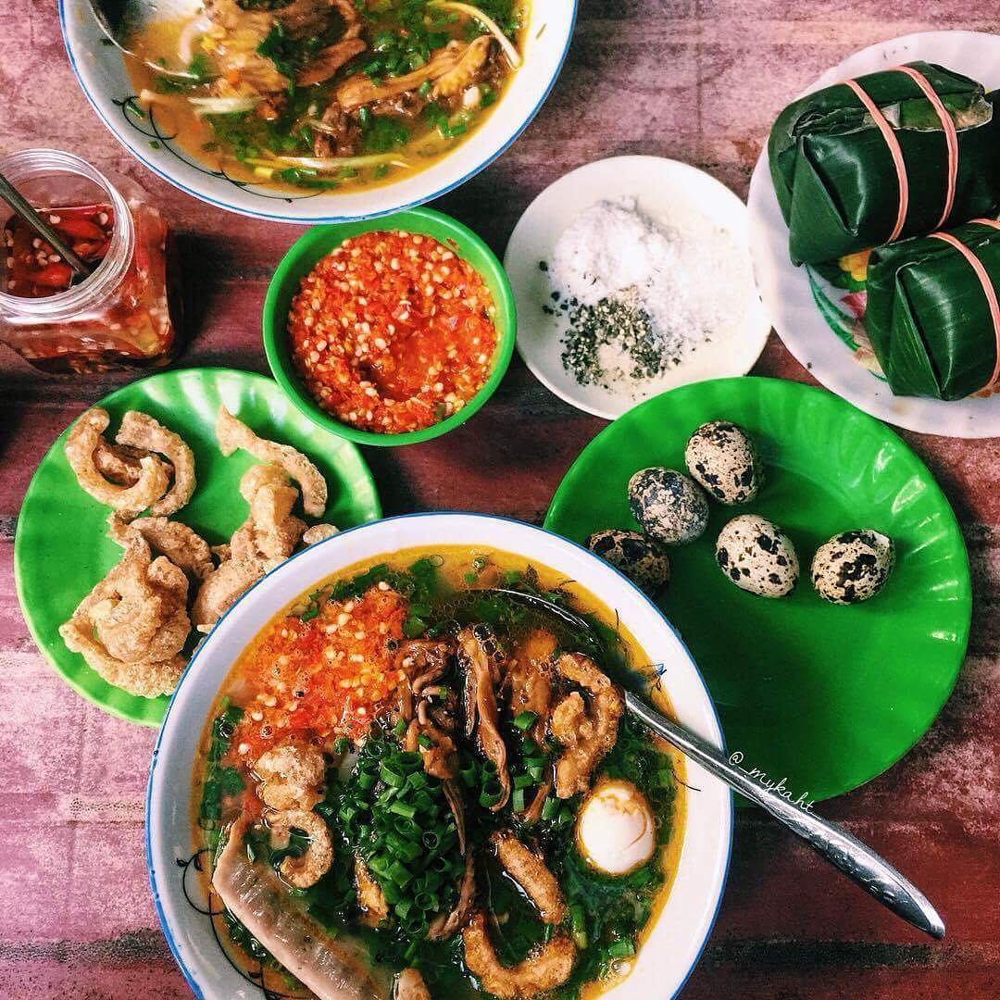

Đến Huế không ăn những món này thì phí hoài cả một chuyến đi
Đã đến Huế thì nhất định không thể bỏ qua những món ăn vô cùng phong phú và hấp dẫn này nhé!
1. Bún bò Huế
Ở Huế thì ăn gì nào, chắc chắn món đầu tiên nghĩ đến là bún bò đúng không? Đến Huế mà không ăn bún bò chính gốc Huế thì thật sự là một thiếu sót! Bún bò Huế thì chỉ cần diễn tả ngắn gọn "ngon xuất sắc". Nếu bạn là một người thích ăn cay thì đây chính là "thiên đường" bởi nước lèo được nêm nếm rất vừa miệng, có phần cay và rất thơm. Bún bò nếu đúng "chuẩn Huế" thì sẽ đặc trưng bởi mùi mắm ruốc, mùi sả và đặc biệt thường có kèm thêm chả cua.
Giá của mỗi tô bún cũng rất "dễ thương" chỉ dao động từ 20k – 30k nhưng nếu bạn muốn ăn vừa đủ chỉ nên kêu tô 25k là đủ no bụng rồi nhé. Gợi ý cho bạn một vài quán "đinh" của xứ này: Quán O Cương (06 Trần Thúc Nhẫn), quán Bà Tuyết (47 Nguyễn Công Trứ), quán Đội Cung (29 Đội Cung),…
2. Bánh canh
Ngoài bún bò thì một món nước khác cũng "làm mưa làm gió" ở xứ Huế này chính là: bánh canh. Bánh canh cũng là một món ăn xuất hiện khá dày đặc ở Huế, ngon nhất phải kể đến là bánh canh cá lóc và bánh canh Nam Phổ được xem như đặc sản của xứ này.

Tô bánh canh cá lóc đậm đà hương vị chua chua, cay cay, cá lóc được chế biến khá kỹ lưỡng không có mùi tanh, nước dùng ngọt ngào và vàng óng tạo cảm giác hấp dẫn "khó cưỡng". Đặc biệt, một tô bánh canh chỉ từ 10k – 20k, giá rẻ mà lại chất lượng thì sao không thử đúng không? Ghi lại vài quán này để ghé nha: Quán Hảo Hảo (206 Nguyễn Tất Thành), quán O Cúc (57 Đinh Công Tráng),…
3. Cơm hến
Nếu đã thử qua hai món nước ngon lành kia thì bạn hãy thử thêm một món cơm cũng là đặc sản của Huế: cơm hến. Ai đã từng đến đây cũng nên ít nhất một lần thử món ăn này bởi thật sự hương vị của nó rất đặc biệt. Một tô cơm đầy ắp hến, trộn kèm với rau sống tươi xanh, ăn kèm lại là một chén nước hến được nêm đậm đà, rất vừa ăn.

Bên cạnh đó, những quán bán cơm hến cũng bán luôn món bún hến ngon ngây ngất chẳng kém đâu! Với giá chỉ 10k/tô thì đây quả là món ăn rất phù hợp cho bữa ăn sáng, muốn ăn no thì 2 tô là căng bụng. Đến Huế, thử cơm hến đúng "chất" thì ghé ngang Quán Nhỏ (28 Phạm Hồng Thái), Cơm hến Na (37 Mạc Đĩnh Chi, P. Phú Cát) nha!
4. Combo bánh Huế
Để "hành trình ẩm thực" tại Huế của bạn thật sự đầy đủ thì đừng quên thử ngay combo những món bánh xinh xắn nhưng ngon "chất ngất" này nha! Với 4 món bánh dân dã: bánh bèo, bột lọc, bánh nậm, ram ít mỗi món bánh lại mang một hương vị đặc trưng riêng ngon đến khó quên.
Thường thì 4 món bánh sẽ được bán chung một quán nên bạn cũng có thể dễ dàng để thưởng thức, giá vẫn siêu "sinh viên" nên bạn cũng không cần phải lo đâu. Bánh bèo chén bột trắng mềm, có phồng tôm, tôm xay, bì heo kèm nước chấm vừa ăn. Nếu ăn bạn nên gọi theo khay, mỗi khay khoảng 20 chén, mỗi chén dao động từ 1 – 2k.